tstools
A Time Series Toolbox for Official Statistics
Matthias Bannert
2025-09-10
Source:vignettes/tstools.Rmd
tstools.RmdAbout tstools
The tstools package provides convenience functions to process, plot and export time series. It was designed for users from the fields of official statistics and macroeconomics. The package is focused on regular time series of monthly and quarterly as well as yearly frequency. By summer 2018, most of the functionality provided by tstools deals with plotting and exporting time series and so does this manual.
Why yet another time series package?
If you have ever thought (or heard)
I can't believe it's so disgusting to create simple plots with 2 y-axes of different scales.,
or
This R thing can't do time series bar charts 'properly' - even Excel can do this. I don't get the hype.
or Why isn't the 2010 label in the middle of the year?
tstools is for you.
In other words, whenever the ‘business’ directly works with code, they wonder why, e.g., legends are not placed automatically where they ought to be. In addition to make plotting more convenient and fun, the main goal of tstools is to provide a simple environment for production reports and a stand alone plots that focus around time series.
Instead of claiming that the business is wrong, limits flexibility or that their visual concepts are flawed, tstools tries to provide a solution that helps economists and establishment statisticians to work and plot conveniently using R.
Replace automatically with by default and you understand how tstools essentially works. The package uses R’s base plot functionality and sets a plethora of defaults, that in combination with each other make the plots look nifty. All the package does when it comes to plotting, is try to guess what the user wants when they call tsplot.
The following sections will show some examples of popular time series plots that used to be hard to get in R:
- (line) charts with 2 y-axes but matching grids
- charts with highlighted time spans
- slick fan charts
- time series bar charts with negative and positive growth contributions
- charts with a continous time x-axis
- charts with a default legend
Graphs
tstools produces base R plots. Hence all resulting plots can simply be extended by further calls to base R plot functions. Base R plots look rather technical and raw, which is why tstools tries to set a ton of useful defaults to make time series plots look fresh and clean from the start.
Basic usage
Plotting with tstools is easy. There is only one generic plotting function called tsplot. Depending on what time series objects are passed on to the function, the method dispatcher chooses the right method and plots the graph. The following sections will walk through several applied plotting examples. Horizontal grids that suit two axes, automatic shifting of series to the middle of the period, colors, line types, filling up started years and many other features come as convenient defaults. Yet, all of these defaults can be adjusted using themes.
Before we get started…
… let’s set up some data for our reproducible examples first. Let’s do this separately so we can really focus on the tstools specific code in our discussion of the examples. Don’t get confused, plotting is really easy, creating random data or reading in data in order to make the examples reproducible is what costs us some extra lines of code here.
library(tstools)
data(KOF)
short <- window(KOF$kofbarometer,
start = c(2007, 1),
end = c(2014, 1)
)
# list of time series
ts1 <- ts(runif(40, -10, 40), start = c(1995, 1), freq = 4)
ts2 <- ts(runif(80, 0, 50), start = c(2000, 1), freq = 12)
tslist <- list()
tslist$ts1 <- ts1
tslist$ts2 <- ts2
# data for stacked bar charts...
tsb1 <- ts(runif(30, -30, 20), start = c(2010, 1), frequency = 4)
tsb2 <- ts(runif(30, 0, 50), start = c(2010, 1), frequency = 4)
tsb3 <- ts(runif(30, 0, 50), start = c(2010, 1), frequency = 4)
min_series <- ts(runif(10, -10, 40), start = c(1995, 1), freq = 4)
min_series_2 <- ts(runif(25, -20, 40), start = c(1995, 1), freq = 12)
min_series_3 <- ts(runif(25, -20, 40), start = c(1995, 1), freq = 4)
min_li <- list(
series1 = min_series,
series2 = min_series_2,
series3 = min_series_3
)
missings <- ts(c(1, 2, 10, 3, 5, 6, NA, NA, 3, 2, 5, 3, 1, 1),
start = c(1995, 1), freq = 4
)Single time series: line chart
The most basic example of a time series plot is a time series line chart. The object short is of class ts.
tsplot(short)Multiple time series (same y-axis) in one line chart
The function tsplot can handle multiple time series objects or lists at once. You can either throw multiple comma separated time series objects at tsplot
tsplot(ts1, ts2, auto_legend = FALSE)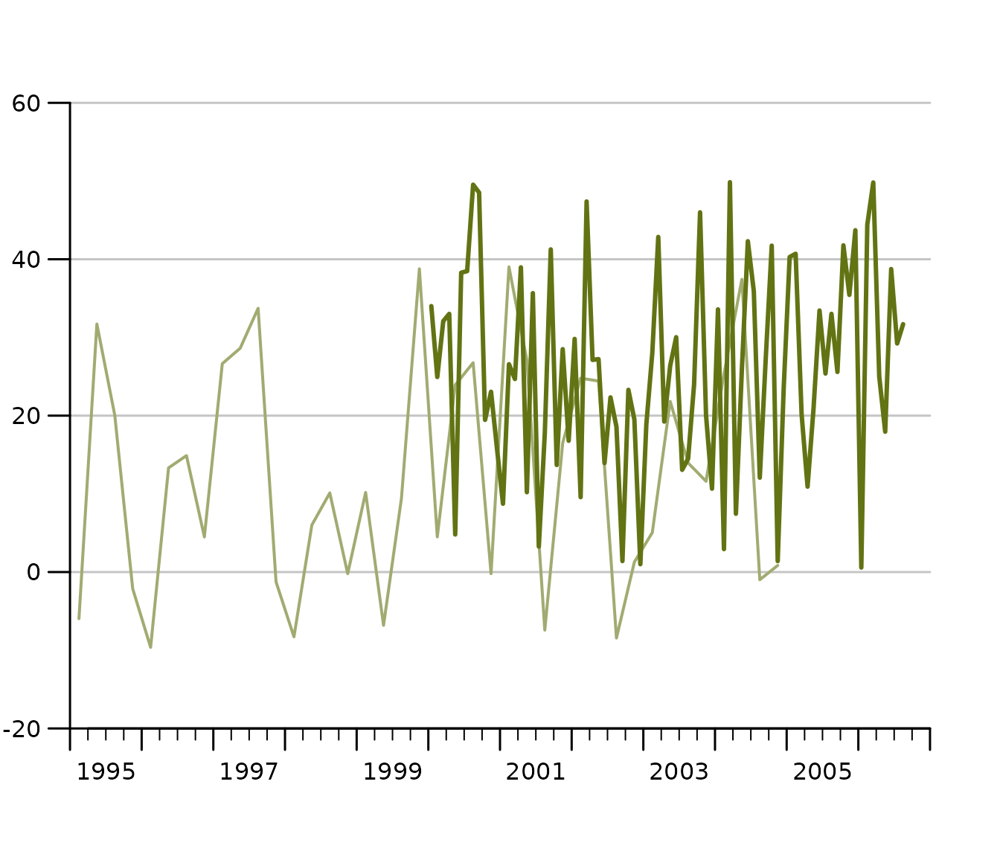
or a list of time series…
tsplot(tslist, auto_legend = FALSE)
Even though tsplot supports mts and single time series, we clearly recommend to pass lists of time series to tsplot for the best and most tested experience. Lists are a convenient way to add legends to time series charts as tsplot automatically uses names of list elements in its legend. You may also define your lists adhoc within the tsplot call like so:
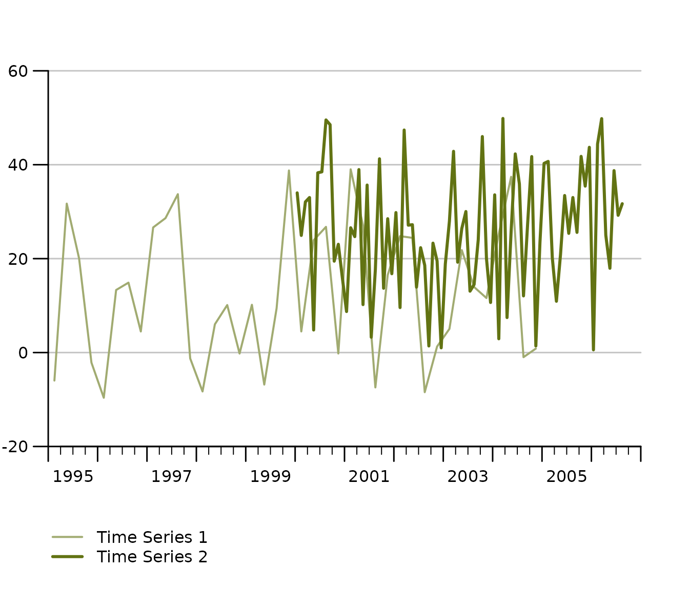
Auto-scale grids are there to help you, how to configure them!
The latest release has considerably improved finding suitable scale and grids automatically. One improvement is the ability to detect not only the minimum necessary range, but also to check whether some value is so close the x-axis that most users prefer an extra grid to have a little extra breathing room. If there’s less than 15 percent of the bottom or grid left, tsplot automatically adds another grid.
The following example tweaks this 15 percent margin to an exaggerated 70 percent, in order to show that an extra grid up top is added because the y_tick_margin parameter implies now that 70 percent of the outer most grid needs to stay clean.
tsplot(short,
theme = init_tsplot_theme(y_tick_margin = .7)
)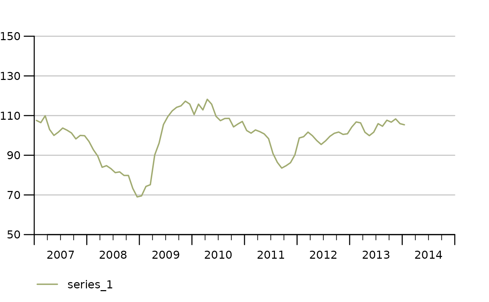
Manual value ticks
Often you just want to have a fixed scale, e.g., for an index that
ranges from 0 to 100. Simply use the manual_value_ticks_l
and manual_value_ticks_r arguments to specify manual ticks
and grids. In case you use 2 y-axes make sure both manual value tick
vectors are of the same length.
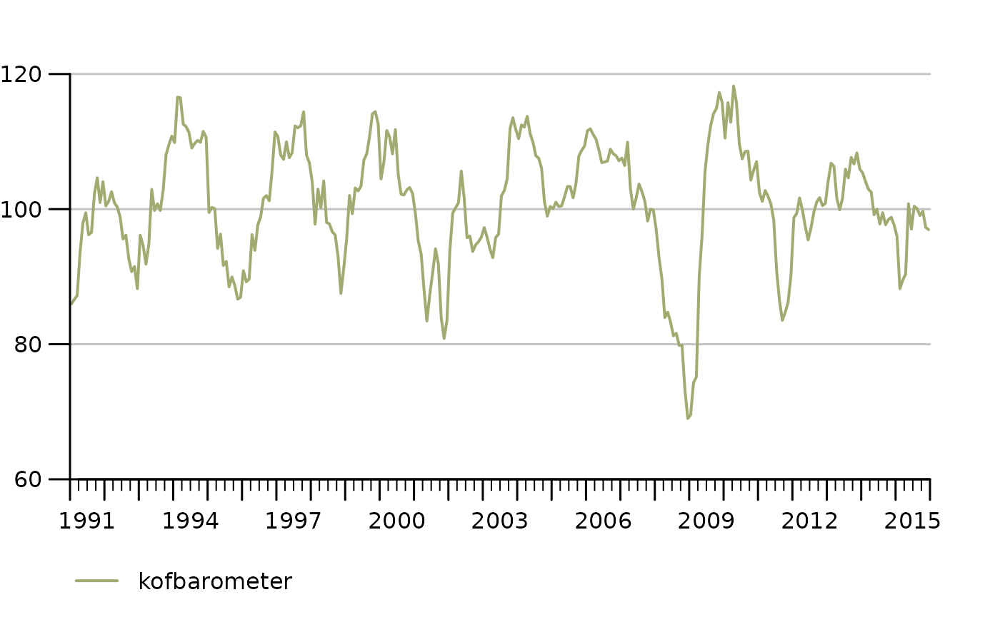
Fan Charts: Plotting Confidence Intervals
tsplot can assign confidence intervals to every time series line. Simply choose the line and confidence level and define an upper and lower bound ts object to draw shaded confidence bounds around a respective series. A confidence interval definition is basically a nested list. For the sake of clear code, it is recommended to define the CI list separately like so:
# Define confidence intervals
ci <- list(
"KOF Barometer" = list(
"80" = list(
lb = KOF$baro_lo_80,
ub = KOF$baro_hi_80
),
"95" = list(
lb = KOF$baro_lo_95,
ub = KOF$baro_hi_95
)
)
)
tsplot(list("KOF Barometer" = KOF$baro_point_fc),
ci = ci
)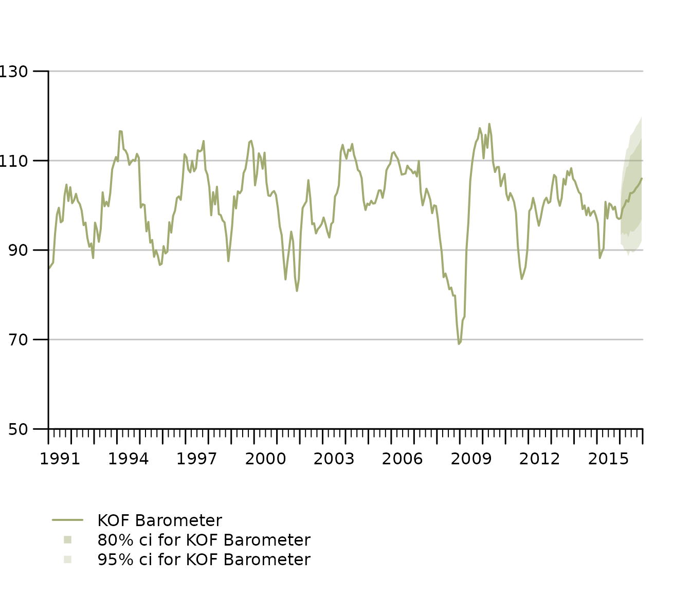
The KOF data example dataset contains an auto.arima point forecast of the KOF Barometer as well as upper and lower bound at the 80% and 95% confidence level. Notice that tsplot does not do any forecasting or estimation of confidence bands, it simply takes some time series as upper and lower bounds and assigns them to a particular series. Thus it’s agnostic of the estimation method.
Stacked Bar Chart
Sometimes we want to display time series as bar charts. Most plotting engines understand bar charts as something that has a categorical x-axis. So even if you have time on the x-axis, periods are treated as categories, which implies that a bar is centered above the category tick for that period. tstools treats the x-axis for bar charts as continous and allows a quarterly series to truly represent an entire quarter. Note that stacked bar charts imply that all involved series have the same frequency.
tsplot(tsb1, tsb2, tsb3,
left_as_bar = TRUE,
auto_legend = FALSE,
theme = init_tsplot_theme(bar_gap = 10)
)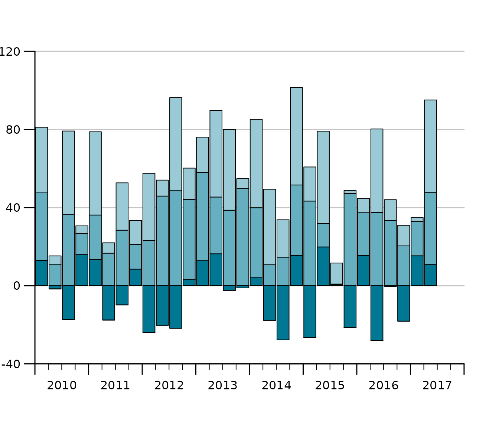
Notice that the gap size of the gap between the bars can be adjusted using the bar_gap theme parameter.
Sum as line in stacked bar charts
One of the reasons for using bar charts with time series is to add up positive and negative contributions. In this case it is also helpful to be able to add the sum of the components to plot on a per period basis. The following draws a line on top of the bars that represents the sum.
tsl <- list(tsb1, tsb2, tsb3)
tsplot(tsl,
left_as_bar = TRUE,
manual_value_ticks_l = seq(-40, 100, by = 20),
auto_legend = FALSE,
theme = init_tsplot_theme(sum_as_line = TRUE)
)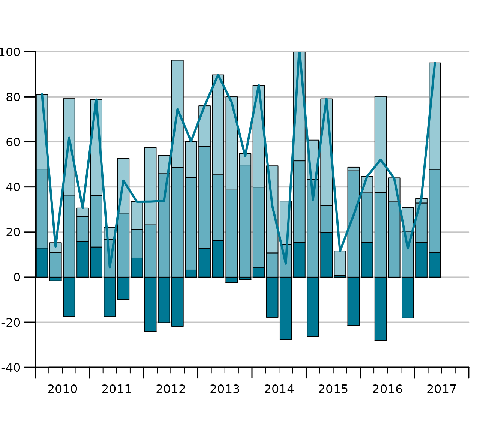
Stacked bar charts with different start and end dates
It is even possible, to produce stacked bar charts from time series of different start and end dates.
tsb1 <- ts(runif(30, -30, 20), start = c(2010, 1), frequency = 4)
tsb2 <- ts(runif(30, 0, 50), start = c(2010, 1), frequency = 4)
tsb3 <- ts(runif(30, 0, 50), start = c(2010, 1), frequency = 4)
tsb4 <- ts(runif(30, -40, 10), start = c(2005, 1), frequency = 4)
tsplot(tsb1, tsb2, tsb3, tsb4,
left_as_bar = TRUE,
auto_legend = FALSE
)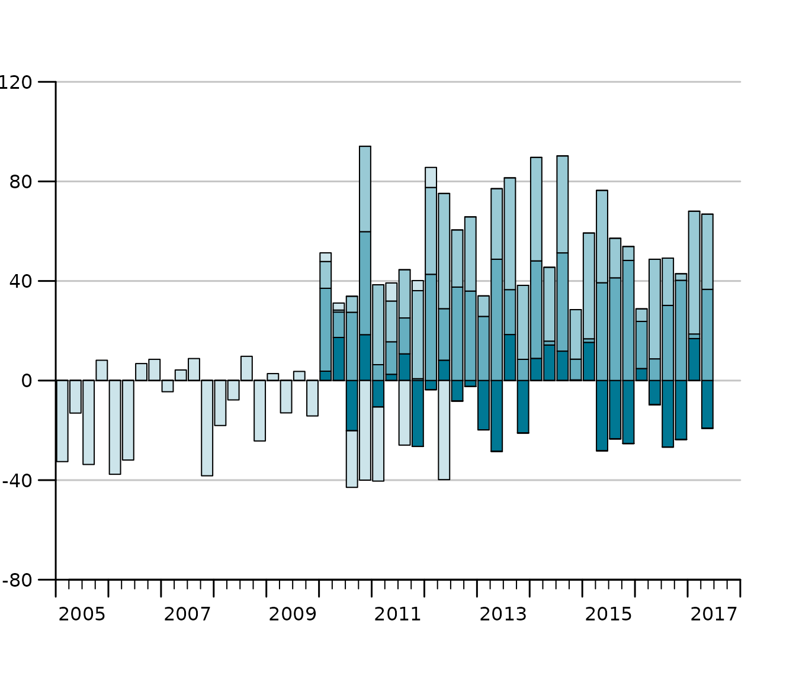 ### Grouped bar charts
When different variables got the same scale, but cannot be aggregated we want to display time series bars next to each other instead of stacking them. In tstools stacking is the default but it can easily be tweaked using the *group_bar_chart parameter.
Stacked Area Charts
Stacked area charts are another way of stacking time series. They might be more illustrative than stacked bar charts, but are subject to certain limitations: plots always start at zero and all series need to be either positive or negative.
set.seed(123)
tslist <- generate_random_ts(4,
starts = 1987:1990,
ranges_min = 1,
ranges_max = 3
)
tsplot(tslist, left_as_band = TRUE)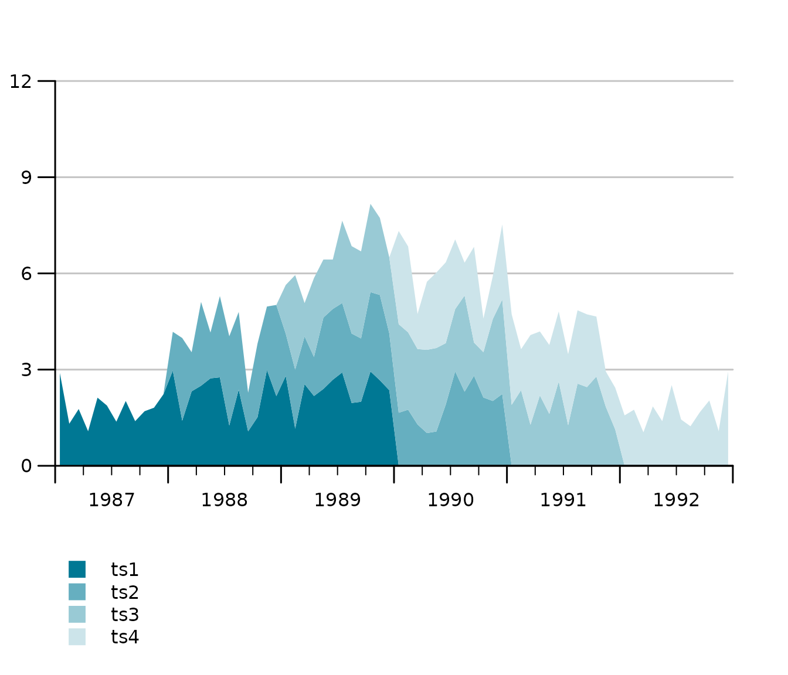
Multiple Y-axis with different scales (line charts)
In order to compare indicators it’s covenient in some domains to plot two time series of completely different scale, e.g., a growth rate and an indicator indexed at 100, to each other. Whenever the absolute level is not overly interesting but rather the lead-lag structure and the co-movement, 2 y-axes with different scales are popular. Hence tsplot introduces a second argument, tsr (time series right), which takes either an object of class ts or a list of time series.
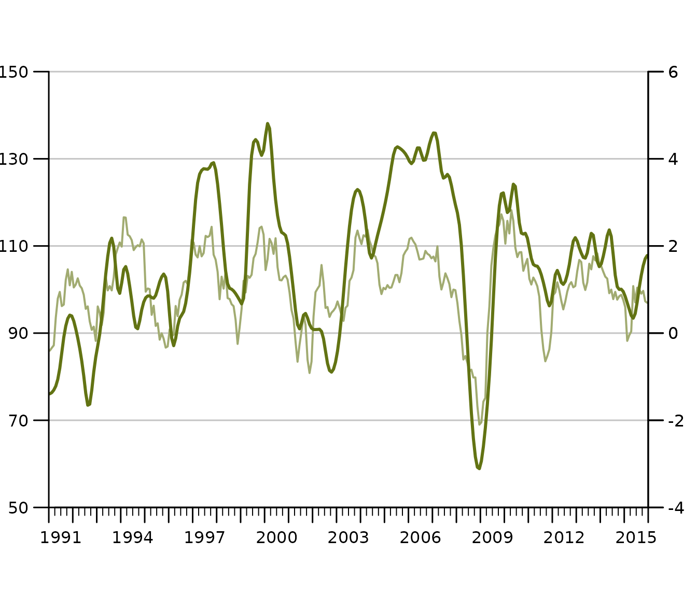
Multiple Y-axes with different scales (bar and line charts)
Sometimes you want a bar chart on one axis and an line chart on the other. Guess what, tstools also has a convenient way of creating these. Simply provide a list of time series to both the … argument and the tsr argument and choose left_as_bar = TRUE. Note that the line chart is automatically moved to the middle of the quarterly bar.
tsb1 <- ts(runif(30, -30, 20), start = c(2010, 1), frequency = 4)
tsb2 <- ts(runif(30, 0, 30), start = c(2010, 1), frequency = 4)
tsb3 <- ts(runif(30, 0, 30), start = c(2010, 1), frequency = 4)
tsr1 <- ts(runif(30, -4, 6), start = c(2010, 1), frequency = 4)
tsplot(tsb1, tsb2, tsb3,
tsr = tsr1,
left_as_bar = TRUE,
auto_legend = FALSE
)Y-Grids: automatic vs. manual
tstools tries to guess a reasonable number of ticks (and horizontal grids). This can be tricky when several time series and multiple axes are involved. tstools’ standard procedure uses value ranges and a logarithm based algorithm to find the order of magnitude of a scale. Further tstools brute forces through a number of reasonable tick counts and chooses a suitable number of ticks. In case there is more than one y-axis the choice will be passed on to the other axis.
Using another function
However, there are countless possibilities and the number of ticks
and grids may come down to a matter of personal taste. Hence,
tstools provides not only the flexibility to set grids
manually, you can even pass another algorithm implemented in you very
own R function that gives back a vector of ticks. Simply pass a function
to the find_ticks_function argument. Currently range, and
potential tick count are fixed as arguments to these functions, but
hopefully passing other sets of arguments will be possible soon.
Tweaking the defaults: Themes
Font size, line color, bar color, grid color, show or not show grid, and a plethora of other options would lead to a ton of parameters. If you had to specify all of those, it would be time consuming task to create a quick explorative plot. So tstools suggests many defaults to many parameters and stores these parameters in lists called themes. To tweak a default, simply initialize the default theme, tweak a single list element and pass the entire theme to tsplot. By doing so you can also define properties of multiple plots just by passing the new theme to the tsplot call.
def_theme <- init_tsplot_theme()
names(def_theme)## [1] "auto_bottom_margin" "band_fill_color"
## [3] "bar_border" "bar_border_lwd"
## [5] "bar_fill_color" "bar_gap"
## [7] "bar_group_gap" "ci_alpha"
## [9] "ci_colors" "ci_legend_label"
## [11] "default_bottom_margin" "fill_up_start"
## [13] "fill_year_with_nas" "highlight_color"
## [15] "highlight_window" "highlight_window_end"
## [17] "highlight_window_freq" "highlight_window_start"
## [19] "highlight_y_values" "highlight_y_lwd"
## [21] "highlight_y_color" "label_pos"
## [23] "legend_all_left" "legend_box_size"
## [25] "legend_col" "legend_font_size"
## [27] "legend_intersp_x" "legend_intersp_y"
## [29] "legend_margin_bottom" "legend_margin_top"
## [31] "legend_seg.len" "line_colors"
## [33] "line_to_middle" "lty"
## [35] "lwd" "lwd_box"
## [37] "lwd_quarterly_ticks" "lwd_x_axis"
## [39] "lwd_y_axis" "lwd_y_ticks"
## [41] "lwd_yearly_ticks" "margins"
## [43] "NA_continue_line" "output_wide"
## [45] "point_symbol" "pointsize"
## [47] "preferred_y_gap_sizes" "quarterly_ticks"
## [49] "range_must_not_cross_zero" "show_left_y_axis"
## [51] "show_points" "show_right_y_axis"
## [53] "show_x_axis" "show_y_grids"
## [55] "subtitle_adj" "subtitle_adj_r"
## [57] "subtitle_cex" "subtitle_margin"
## [59] "subtitle_outer" "subtitle_transform"
## [61] "sum_as_line" "sum_legend"
## [63] "sum_line_color" "sum_line_lty"
## [65] "sum_line_lwd" "tcl_quarterly_ticks"
## [67] "tcl_y_ticks" "tcl_yearly_ticks"
## [69] "title_adj" "title_cex.main"
## [71] "title_margin" "title_outer"
## [73] "title_transform" "total_bar_margin_pct"
## [75] "use_bar_gap_in_groups" "use_box"
## [77] "x_tick_dt" "xaxs"
## [79] "y_grid_color" "y_grid_count"
## [81] "y_grid_count_strict" "y_las"
## [83] "y_range_min_size" "y_tick_force_integers"
## [85] "y_tick_margin" "yaxs"
## [87] "yearly_ticks"Please take a look at the help file (?init_tsplot_theme)
for a comprehensive list and documenatation of all theme parameters. The
hand-picked examples below should give you an idea of how much you can
do with themes and how to use ’em.
Highlight windows: mark a period
Let’s assume the last 2 years of the time series are a forecast which should be highlight by a shaded area behind the actual series. If you know in advance which default parameter – in this case highlight_window = FALSE – you want to overwrite, I recommend to do so right in your calll to init_tsplot_theme. The cool thing about it is: R Studio’s auto auggest helps you find the parameter. Pro tip: If you do not plan to reuse your theme in another plot, specify the parameter directly in function call.
tsplot(tsb1, tsb2, tsb3,
left_as_bar = TRUE,
theme = init_tsplot_theme(highlight_window = TRUE)
)Add a Box Around Your Plot
tt <- init_tsplot_theme(use_box = TRUE)
tsplot(tsb1, tsb2, tsb3,
tsr = tsr1,
left_as_bar = TRUE,
theme = tt
)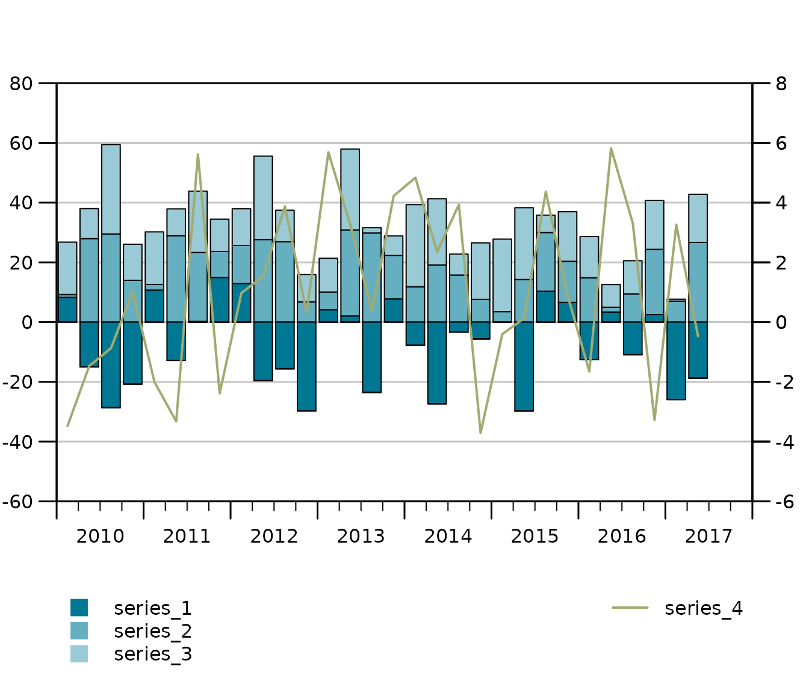
Adjust the highlight window
nt <- init_tsplot_theme(highlight_window = TRUE)
nt$highlight_window_start <- c(2017, 1)
nt$highlight_window_end <- c(2018, 1)
tsplot(tsb1, tsb2,
theme = nt
)Handling missings (NA Handling)
tsplot(missings,
theme = init_tsplot_theme(
NA_continue_line = TRUE,
show_points = TRUE
)
)Assign Names to Single Objects
tsplot(
"An arbitrary ts object" = ts1,
"another ts object" = ts2
)Legends Left and Right Y-Axis
tsplot(KOF["kofbarometer"],
tsr = KOF["reference"]
)Force all Legends to the Left
tsplot(KOF["kofbarometer"],
tsr = list("reference (right scale)" = KOF$reference),
theme = init_tsplot_theme(legend_all_left = TRUE)
)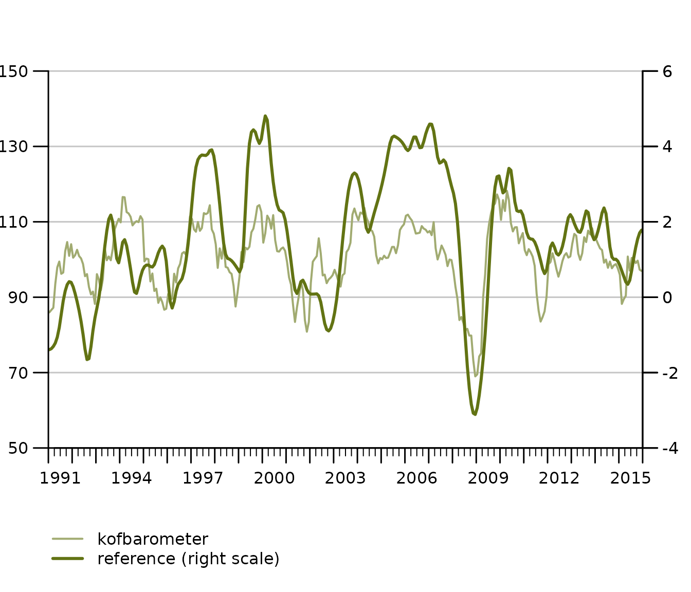
Remember: auto_legend = FALSE
tsplot(KOF[1], auto_legend = FALSE)Export your chart to .pdf
Saving your tstools chart to a .pdf document is as easy and convenient as
tsplot(KOF[1],
output_format = "pdf",
theme = init_tsplot_print_theme(output_wide = TRUE)
)Notice the optional print theme and output_wide parameter:
You can export 4:3 (default) format .pdf files as well as 16:9 (wide)
using the convenience output_format theme parameter. Notice
also that you do not necessarily have to use the print theme. What is
important is not to wrap the call in pdf() and
dev.off() calls when using the
output_format="pdf" option.
Export lists of time series
The latest release of tstools contains a major overhaul of its export functionality. Exporting time series to csv is up to 400 times faster than before, thanks to some profiling sessions and the inclusion of data.table (thanks Matt Dowle for the awesome package). While this may not be that big of an achievement for some, those who export hundreds of thousands or millions of time series will like it.
Besides the default .csv, .json, .xlsx, and .RData are available. .csv allows for wide format and transposed wide format output.
Csv: long format (default), wide format, transposed wide format.
write_ts(KOF, file.path(tempdir(), "test_export_wide_trans"),
"csv",
wide = TRUE,
transpose = TRUE
)transpose = TRUE moves the time to the header (x-axis) and places all variables in rows below each other. Transposing data is a good solution if you have a larger amount of variables and at max about 200-300 periods.
Frequenctly asked questions (FAQs)
1. Can I combine tsplot calls with ggplot (themes)?
No, tsplot is base R based. You can simply add
enhancements to the plot using base R calls. Add text, additional lines
by calling functions such as mtext(), abline()
etc.
2. I set legend_col=1 but tsplot seems
to ignore it. Why is that?
You’re probably using 2 Y-axes. The default for two Y-axes is the have a left aligned and a right aligned axis. This allows you to leave out additions like ‘(left scale)’, ‘(right scale)’. However, you can simply force all legends left.
init_tsplot_theme(
legend_all_left = TRUE,
legend_col = 1
)3. How can I change of my lines, bars and areas?
We have multiple pre-defined vectors for different chart types. All of them are easy to adjust. Also
init_tsplot_theme(
band_fill_color = c("#FF0000", "#00FF00"),
line_colors = c("#FF0000", "#00FF00"),
bar_fill_color = c("#FF0000", "#00FF00")
)